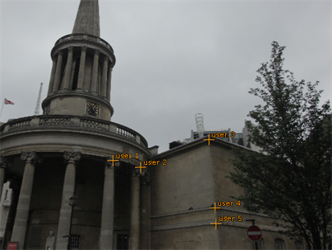
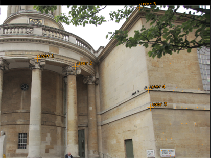

在静态跟踪期间，参考帧之间的链接可能会失败。这可能有多种原因，例如剧照之间缺乏重叠。您可以通过在自动跟踪之前在帧的公共功能上添加用户跟踪来帮助 CameraTracker。
| 1。 | 使用中描述的步骤 使用用户跟踪 在尽可能多的帧中创建至少四个用户轨迹。 |
例如，在如图所示的剧照中，柱子的顶部和石头在建筑的角落工作。
|
 |
 |
| 参考框架 A | 参考框架 B |
| 2. | 移动到下一帧，并将用户轨迹重新定位到静止中的相应特征。继续整个剧照序列。 |
| 3. | 以这种方式链接所有帧后，单击 轨道 . |
CameraTracker 使用来自用户轨迹的可靠信息来创建一组自动轨迹。
| 4. | 继续到 解决相机位置 . |
注意: 上述工作流描述了如何使用用户跟踪来帮助连接未自动跟踪的帧。有时，有这么多跟踪不良的帧，而不是希望链接帧和点击 轨道 工作时，从头开始并执行完全手动跟踪可能更容易。请参阅 手动跟踪场景 更多细节。
|
|